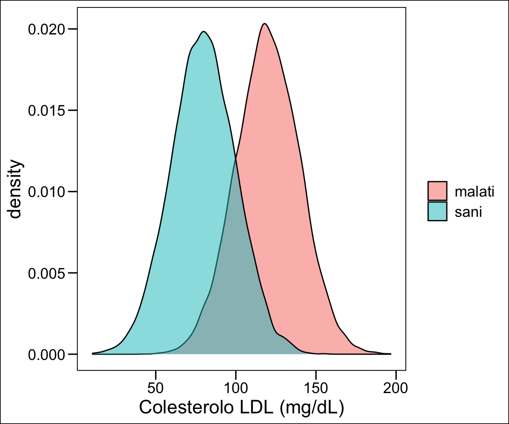
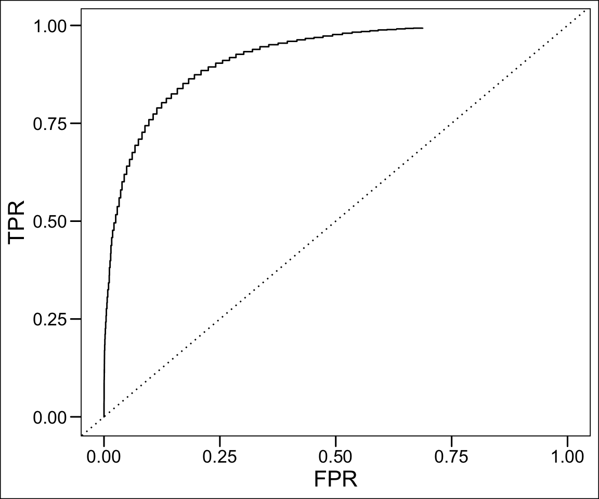
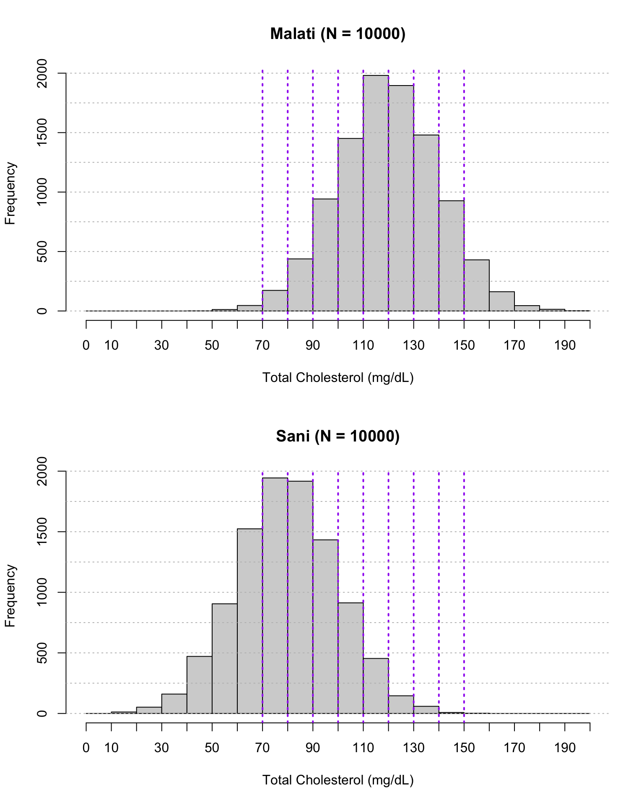
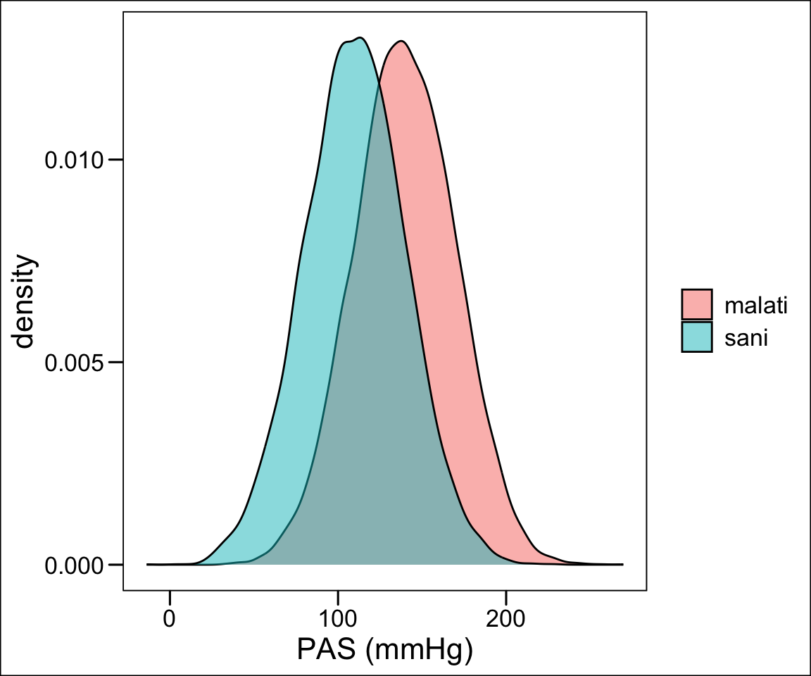
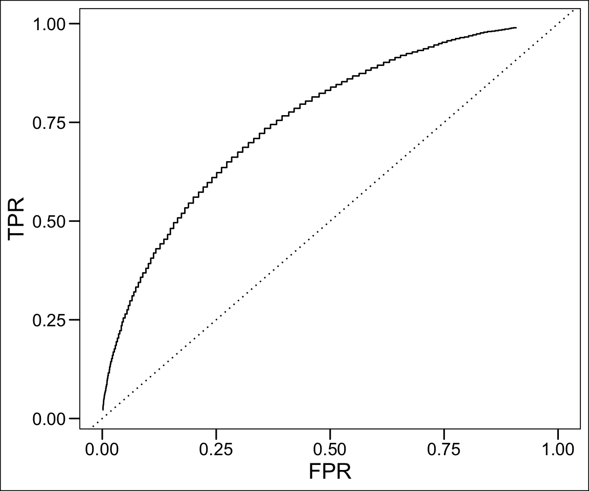
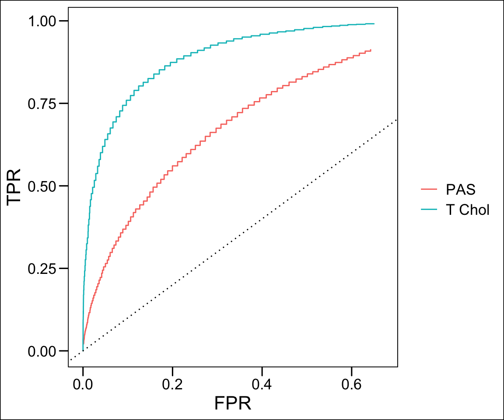
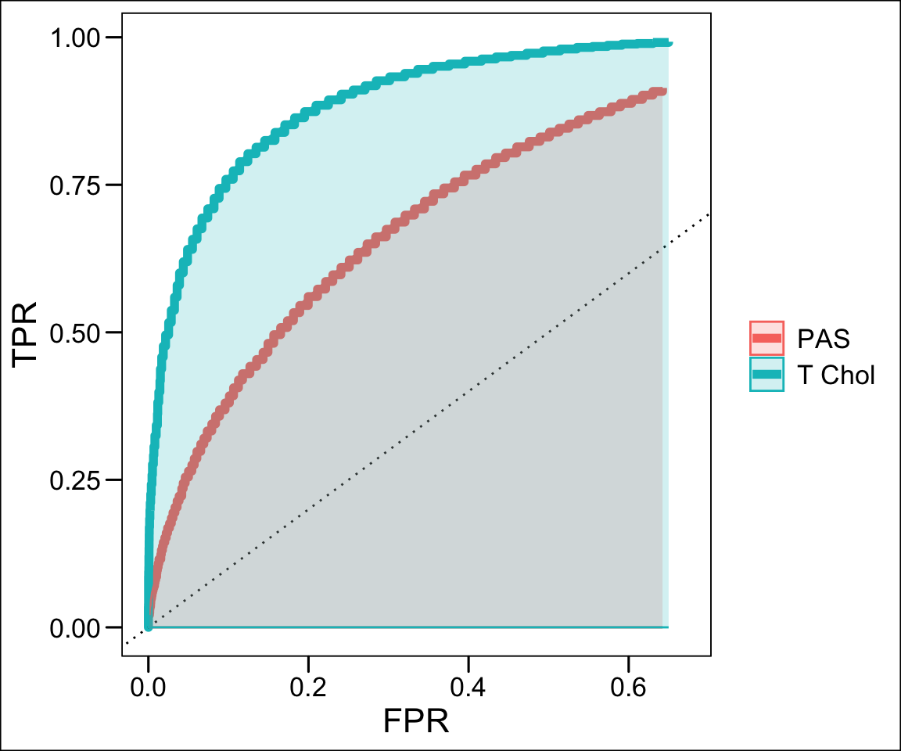

Code
library(dplyr)
library(ggplot2)library(dplyr)
library(ggplot2)Uno studio osservazionale è un tipo di ricerca in cui il ricercatore osserva e registra eventi o comportamenti senza intervenire direttamente. A differenza degli studi sperimentali, dove il ricercatore manipola una variabile (ad esempio somministrando un farmaco o un trattamento), negli studi osservazionali non c’è alcun intervento attivo. Il ricercatore si limita a monitorare l’andamento naturale degli eventi.
Gli studi osservazionali sono particolarmente utili quando sarebbe non etico o impraticabile condurre uno studio sperimentale. Ad esempio, non possiamo chiedere a delle persone di iniziare a fumare per vedere se sviluppano il cancro ai polmoni; tuttavia, possiamo osservare i fumatori e i non fumatori e studiare il rischio di sviluppare la malattia nel corso del tempo.
Esistono tre principali tipi di studi osservazionali, ciascuno con caratteristiche specifiche:
Negli studi di coorte, un gruppo di individui (la coorte) viene seguito nel tempo per osservare chi sviluppa una determinata condizione o malattia. Questi individui vengono suddivisi in base alla loro esposizione a un determinato fattore di rischio (ad esempio il fumo), e poi vengono osservati per vedere chi sviluppa l’outcome di interesse (ad esempio il cancro).
Gli studi di coorte possono essere:
Prospettici: i partecipanti vengono seguiti nel futuro, dal momento dell’inizio dello studio in avanti.
Retrospettivi: si utilizzano dati già raccolti in passato, andando a esaminare ciò che è accaduto nel tempo ai partecipanti.
Vantaggi:
Possono fornire stime dirette del rischio di malattia associato all’esposizione.
Permettono di studiare molteplici outcome per una singola esposizione.
Limiti:
Sono costosi e richiedono molto tempo, soprattutto per malattie che si sviluppano lentamente.
Possono soffrire di perdita di partecipanti (attrition) durante il follow-up.
Negli studi caso-controllo, si confrontano individui che hanno già sviluppato una malattia (i casi) con individui che non hanno la malattia (i controlli), per verificare se vi siano differenze nelle esposizioni passate a determinati fattori di rischio.
Vantaggi:
Ideali per studiare malattie rare o con lunghi periodi di latenza.
Più veloci ed economici rispetto agli studi di coorte.
Limiti:
Rischio di bias di richiamo: i casi potrebbero ricordare meglio le esposizioni passate rispetto ai controlli.
Non permettono di calcolare il rischio assoluto, ma solo la odds ratio (rapporto di probabilità).
Gli studi trasversali misurano contemporaneamente l’esposizione e l’outcome in un determinato momento, fornendo una “fotografia” della popolazione in quel preciso istante. Questi studi sono particolarmente utili per stimare la prevalenza di una condizione in una popolazione.
Vantaggi:
Sono rapidi e relativamente poco costosi.
Utili per descrivere la distribuzione delle malattie in una popolazione.
Limiti:
Non possono stabilire relazioni causali poiché esposizione e outcome sono misurati contemporaneamente.
Non permettono di determinare se l’esposizione precede o segue l’outcome.
Gli studi osservazionali sono essenziali nella ricerca epidemiologica e nella medicina, soprattutto quando esperimenti controllati non sono fattibili o etici. Tuttavia, presentano una serie di limiti che è importante comprendere.
Vantaggi:
Eticamente accettabili: Permettono di studiare situazioni in cui non sarebbe etico intervenire (es. esposizioni dannose come il fumo o l’inquinamento).
Fattibili: Sono generalmente più facili da condurre rispetto agli studi sperimentali, richiedono meno risorse e spesso utilizzano dati già disponibili.
Generano ipotesi: Forniscono indicazioni preliminari su relazioni tra fattori di rischio e malattie che possono essere successivamente testate in studi sperimentali.
Limiti:
Causalità incerta: Non possono stabilire con certezza un nesso causale tra esposizione e outcome. Ad esempio, se uno studio trasversale mostra che le persone che guardano molta televisione sono più obese, non possiamo dire se la televisione causi l’obesità o se le persone obese tendano a guardare più televisione.
Confondenti: Spesso è difficile controllare per tutti i fattori confondenti, cioè variabili che potrebbero influenzare sia l’esposizione che l’outcome. Ad esempio, l’età, il sesso o il reddito possono influenzare sia il rischio di malattia che l’esposizione a determinati fattori di rischio.
Bias: Gli studi osservazionali sono particolarmente vulnerabili a diversi tipi di bias (distorsioni), come il bias di selezione (se i partecipanti selezionati non sono rappresentativi della popolazione) e il bias di richiamo (se i partecipanti non ricordano accuratamente le esposizioni passate).
Gli studi osservazionali sono uno strumento fondamentale nella ricerca medica e sociale. Offrono importanti indicazioni sulle associazioni tra fattori di rischio ed esiti di salute, permettendo ai ricercatori di generare ipotesi e di identificare tendenze nella popolazione. Tuttavia, a causa della loro natura non sperimentale, è essenziale interpretare i risultati con cautela, tenendo sempre presente la possibilità di confondenti e bias.
Quando conduciamo uno studio epidemiologico per esplorare la relazione tra un’esposizione (ad esempio il fumo) e un outcome di salute (ad esempio il cancro ai polmoni), è fondamentale quantificare l’associazione tra i due. Le misure di associazione ci permettono di comprendere se e quanto un’esposizione aumenta o riduce la probabilità di un determinato esito.
Il Risk Ratio (RR), o rapporto di rischio, è una misura di associazione comunemente utilizzata negli studi di coorte. Esprime il rapporto tra il rischio di sviluppare una malattia (o un outcome) nei soggetti esposti a un fattore di rischio e il rischio nei soggetti non esposti.
\[RR = \frac{Rischio \ nei\ soggetti \ esposti}{Rischio \ nei \ soggetti \ non \ esposti}\]
\[Rischio = \frac{Numero \ di \ individui \ che \ sviluppano \ malattia}{Numero \ totale \ di \ individui \ esposti}\]
RR = 1: L’esposizione non modifica il rischio rispetto ai non esposti.
RR > 1: L’esposizione aumenta il rischio di sviluppare la malattia (es. RR = 2 significa che gli esposti hanno il doppio del rischio di sviluppare la malattia rispetto ai non esposti).
RR < 1: L’esposizione riduce il rischio di sviluppare la malattia (es. RR = 0.5 indica che gli esposti hanno la metà del rischio di ammalarsi rispetto ai non esposti).
In uno studio di coorte sui fumatori e il cancro ai polmoni, se 10 su 100 fumatori sviluppano il cancro e solo 2 su 100 non fumatori lo sviluppano:
\[ RR = \frac{10/100}{2/100} = 5 \]
Questo significa che i fumatori hanno un rischio 5 volte maggiore di sviluppare il cancro ai polmoni rispetto ai non fumatori.
L’Odds Ratio (OR), o rapporto di probabilità, è la misura più comune negli studi caso-controllo, ma può essere utilizzata anche in studi di coorte. Esprime il rapporto tra le odds (probabilità) di esposizione tra i casi (quelli che hanno sviluppato l’outcome) rispetto ai controlli (quelli che non lo hanno sviluppato).
\[OR = \frac{odds \ di \ esposizione \ nei \ casi }{odds \ di \ esposizione \ nei \ controlli}\]
\[Odds = \frac{Numero \ di \ eventi}{Numero \ di \ non \ eventi}\]
OR = 1: Nessuna associazione tra esposizione e outcome.
OR > 1: L’esposizione è associata a un aumento delle probabilità di sviluppare l’outcome.
OR < 1: L’esposizione è associata a una riduzione delle probabilità di sviluppare l’outcome.
In uno studio caso-controllo che esamina la relazione tra dieta ricca di grassi e infarto, supponiamo che 30 casi su 50 abbiano avuto una dieta ricca di grassi, mentre tra i controlli solo 10 su 50 lo abbiano fatto:
\[ OR = \frac{30/20}{10/40} = \frac{1.5}{0.25} = 6 \]
Questo significa che coloro che hanno una dieta ricca di grassi hanno 6 volte più probabilità di avere un infarto rispetto a quelli con una dieta a basso contenuto di grassi.
Il Prevalence Ratio (PR) è utilizzato negli studi trasversali (cross-sectional) per confrontare la prevalenza di un outcome tra individui esposti e non esposti a un determinato fattore di rischio. Misura il rapporto tra la prevalenza della malattia negli esposti rispetto ai non esposti.
\[ PR = \frac{Prevalenza \ negli \ esposti}{Prevalenza \ nei \ non \ esposti} \]
\[ Prevalenza = \frac{Numero \ di \ casi \ di \ malattia}{Numero \ totale \ di \ individui \ nella \ popolazione} \]
PR = 1: Nessuna differenza nella prevalenza dell’outcome tra esposti e non esposti.
PR > 1: La prevalenza dell’outcome è maggiore tra gli esposti.
PR < 1: La prevalenza dell’outcome è minore tra gli esposti.
In uno studio trasversale sulla prevalenza dell’asma tra persone esposte e non esposte a inquinamento, se la prevalenza di asma è del 15% tra gli esposti e del 5% tra i non esposti:
\[ PR = \frac{0.15}{0.05}= 3 \]
Questo significa che la prevalenza dell’asma è 3 volte maggiore tra coloro che sono esposti all’inquinamento rispetto a coloro che non lo sono.
Il Risk Ratio è utilizzato principalmente negli studi di coorte, dove seguiamo i partecipanti nel tempo e possiamo calcolare il rischio di sviluppare una malattia.
L’Odds Ratio è comune negli studi caso-controllo, dove non possiamo calcolare il rischio perché la malattia è già presente al momento della raccolta dei dati, quindi usiamo le odds (probabilità) di esposizione.
Il Prevalence Ratio è specifico degli studi trasversali, dove valutiamo la prevalenza di una condizione in un dato momento, ma non possiamo calcolare il rischio futuro.
Il rate ratio (RR) è utilizzato negli studi longitudinali per confrontare il tasso di un outcome tra individui esposti e non esposti a un determinato fattore di rischio. Misura il rapporto tra tassi di insorgenza della malattia nel tempo negli esposti rispetto ai non esposti.
\[ RR = \frac{Tasso \ di \ malattia \ negli \ esposti}{Tasso \ di \ malattia \ nei \ non \ esposti} \]
La 𝑠𝑜𝑚𝑚𝑎 𝑑𝑒𝑖 𝑡𝑒𝑚𝑝𝑖 𝑑𝑖 𝑒𝑠𝑝𝑜𝑠𝑖𝑧𝑖𝑜𝑛𝑒 𝑎𝑙 𝑟𝑖𝑠𝑐ℎ𝑖𝑜 è denominata «massa a rischio». I tempi da includere nella somma sono: Per i soggetti che si ammalano il tempo che intercorre tra l’inizio dell’osservazione e il tempo in cui è osservata per la prima volta la malattia (t a t + \(\Delta t\) ). Per i soggetti che sono osservati per tutto il periodo da t a t + \(\Delta t\) e che non si sono ammalati il tempo è dato da tutto il periodo (\(\Delta\)) Per i soggetti che non si ammalano ma che sono usciti dall’osservazione per un tempo < \(\Delta\) (persi al follow-up) il tempo da t fino all’ultima osservazione. Questo permette di tenere conto in modo corretto dei soggetti con informazione incompleta. L’unità di misura è persone/tempo.

RR = 1: Nessuna differenza nella tasso di incidenza dell’outcome tra esposti e non esposti.
RR > 1: Il tasso di incidenza dell’outcome è maggiore tra gli esposti.
RR < 1: Il tasso di incidenza dell’outcome è minore tra gli esposti
Studio caso-controllo
set.seed(123)
r = .6
sim <- rbind(
data.frame(outcome = rep(1, 30), exposure = rbinom(30, 1, r) ),
data.frame(outcome = rep(0, 60), exposure = rbinom(60, 1, r/2)))
toString(sim$outcome)[1] "1, 1, 1, 1, 1, 1, 1, 1, 1, 1, 1, 1, 1, 1, 1, 1, 1, 1, 1, 1, 1, 1, 1, 1, 1, 1, 1, 1, 1, 1, 0, 0, 0, 0, 0, 0, 0, 0, 0, 0, 0, 0, 0, 0, 0, 0, 0, 0, 0, 0, 0, 0, 0, 0, 0, 0, 0, 0, 0, 0, 0, 0, 0, 0, 0, 0, 0, 0, 0, 0, 0, 0, 0, 0, 0, 0, 0, 0, 0, 0, 0, 0, 0, 0, 0, 0, 0, 0, 0, 0"toString(sim$exposure)[1] "1, 0, 1, 0, 0, 1, 1, 0, 1, 1, 0, 1, 0, 1, 1, 0, 1, 1, 1, 0, 0, 0, 0, 0, 0, 0, 1, 1, 1, 1, 1, 1, 0, 1, 0, 0, 1, 0, 0, 0, 0, 0, 0, 0, 0, 0, 0, 0, 0, 1, 0, 0, 1, 0, 0, 0, 0, 1, 1, 0, 0, 0, 0, 0, 1, 0, 1, 1, 1, 0, 1, 0, 1, 0, 0, 0, 0, 0, 0, 0, 0, 0, 0, 1, 0, 0, 1, 1, 1, 0"tab<- addmargins(table(ESPOSIZIONE = sim$exposure, OUTCOME = sim$outcome))
tab OUTCOME
ESPOSIZIONE 0 1 Sum
0 42 14 56
1 18 16 34
Sum 60 30 90OR = (tab[2,2]/tab[1,2])/(tab[2,1]/tab[1,1])
OR[1] 2.666667tab<- table(ESPOSIZIONE = sim$exposure, OUTCOME = sim$outcome)
ptab <- prop.table(tab, margin = 2)
ptab OUTCOME
ESPOSIZIONE 0 1
0 0.7000000 0.4666667
1 0.3000000 0.5333333OR = (ptab[2,2]/(1-ptab[2,2]))/(ptab[2,1]/(1-ptab[2,1]))Quando abbiamo una variabile numerica continua (ad esempio, livelli di colesterolo nel sangue) e vogliamo capire come questa variabile si associ a una condizione binaria (ad esempio, malato vs non malato), possiamo usare la curva ROC e l’Area Sotto la Curva (AUC) per misurare il potere discriminante della variabile continua. Questo ci permette di valutare quanto bene la variabile predice l’appartenenza a una delle due categorie.
malati <- rnorm(10000,120,20 )
sani <- rnorm(10000, 80, 20)
data.frame(col = c(malati, sani), ty = rep(c('malati', 'sani'), each = 10000)) -> cc
ggplot(cc, aes(col, fill = ty))+geom_density(alpha = .5)+ggthemes::theme_base()+labs(fill = '', x = 'Colesterolo LDL (mg/dL)')
Supponiamo di avere una variabile continua come il livello di colesterolo e di voler capire quanto sia utile questo indicatore per predire la presenza di malattie cardiovascolari (CVD) in un gruppo di pazienti. I pazienti sono classificati come “malati” o “non malati” in base alla presenza o assenza di CVD.
L’obiettivo è determinare se possiamo usare il livello di colesterolo per distinguere in modo efficace chi svilupperà malattie cardiovascolari e chi no. La curva ROC e l’AUC sono strumenti fondamentali per questo scopo.
La curva ROC viene utilizzata per valutare un classificatore, ma in questo caso la variabile continua (ad esempio, il livello di colesterolo) viene trattata come un predittore che può assumere valori diversi. In pratica, impostiamo diverse soglie lungo la variabile continua e a ogni soglia decidiamo se classificare un individuo come “malato” o “non malato”. Per ciascuna soglia:
Se il valore del colesterolo è sopra la soglia, classifichiamo il paziente come “malato”.
Se il valore è sotto la soglia, il paziente viene classificato come “non malato”.
Modificando la soglia, otteniamo una serie di coppie di valori di True Positive Rate (TPR) e False Positive Rate (FPR)che tracciamo sulla curva ROC.
Modello senza soglia fissa: La variabile continua, come il colesterolo, non ha un valore netto che separa perfettamente i “malati” dai “non malati”. A ogni livello di colesterolo possiamo determinare una soglia diversa per decidere chi è malato.
TPR e FPR: Per ciascuna soglia di colesterolo:
Il True Positive Rate (TPR) (o sensibilità) è la proporzione di individui malati correttamente identificati come tali.
Il False Positive Rate (FPR) è la proporzione di individui non malati erroneamente classificati come malati.
Costruzione della curva ROC: Variando la soglia lungo l’intervallo di valori di colesterolo, possiamo tracciare la curva ROC, che rappresenta il compromesso tra TPR e FPR a diverse soglie.
t = 80
lapply(seq(70,200, 1), function(t){
TPR <- sum(cc$col>=t & cc$ty == 'malati')/sum(cc$ty == 'malati')
FPR <- sum(cc$col>=t & cc$ty == 'sani')/sum(cc$ty == 'sani')
data.frame(TPR, FPR)
})%>%do.call(rbind,.) -> tmp
ggplot(tmp, aes(FPR, TPR))+geom_step()+
geom_abline(slope = 1, intercept = 0, linetype = 'dotted')+
scale_x_continuous(limits = c(0,1))+
ggthemes::theme_base()
par(mfrow = c(2,1))
hist(cc$col[cc$ty == 'malati' & cc$col > 0 & cc$col <=200], breaks = seq(0,200, 10), xlab = 'Total Cholesterol (mg/dL)', main = paste0('Malati (N = ', sum(cc$ty == 'malati' & cc$col > 0 & cc$col <=200), ')'), axes = F)
axis(1, at = seq(0, 200, 10))
axis(2)
abline(v = seq(70, 150, 10), lty = 3, col = 'purple', lwd = 2)
abline(h = seq(0, 2000, 250), lty = 3, col = 'grey', lwd = 1)
hist(cc$col[cc$ty == 'sani' & cc$col > 0 & cc$col <=200], breaks = seq(0,200, 10), xlab = 'Total Cholesterol (mg/dL)', main = paste0('Sani (N = ', sum(cc$ty == 'sani' & cc$col > 0 & cc$col <=200), ')'), axes = F)
axis(1, at = seq(0, 200, 10))
axis(2)
abline(v = seq(70, 150, 10), lty = 3, col = 'purple', lwd = 2)
abline(h = seq(0, 2000, 250), lty = 3, col = 'grey', lwd = 1)
La forma della curva ROC ci dà un’indicazione del potere discriminante della variabile continua:
Se la curva ROC si avvicina all’angolo in alto a sinistra, significa che esiste una soglia di colesterolo in grado di separare molto bene i malati dai non malati, con un TPR alto e un FPR basso.
Se la curva ROC si avvicina alla diagonale (la linea 45° che va da (0,0) a (1,1)), significa che il colesterolo non è un buon indicatore per distinguere tra malati e non malati; il modello è poco utile perché non discrimina bene tra le due categorie.
L’AUC è una singola misura sintetica che quantifica la capacità discriminante della variabile continua rispetto alla condizione binaria.
AUC = 1: La variabile continua separa perfettamente malati e non malati, esiste una soglia perfetta.
AUC = 0.5: La variabile continua è inutile per discriminare tra malati e non malati; il risultato sarebbe equivalente a indovinare a caso.
AUC > 0.8: La variabile ha una buona capacità di discriminazione.
AUC = 0.7-0.8: Moderata capacità discriminante.
AUC < 0.7: Capacità discriminante scarsa.
Immaginiamo uno studio che ha raccolto i livelli di colesterolo di 100 pazienti, di cui 50 hanno sviluppato malattie cardiovascolari e 50 no. Vogliamo vedere se i livelli di colesterolo sono un buon indicatore per identificare chi sviluppa malattie.
Step 1: Modellazione della curva ROC: Utilizziamo diversi valori di soglia del colesterolo (ad esempio, 180 mg/dL, 200 mg/dL, 220 mg/dL) per classificare i pazienti. Per ogni soglia, calcoliamo il TPR e il FPR.
Step 2: Tracciamento della curva ROC: Tracciamo la curva ROC in base ai valori di TPR e FPR per ciascuna soglia. Se la curva sale rapidamente verso l’alto e rimane vicina all’angolo superiore sinistro del grafico, significa che il colesterolo ha un buon potere discriminante.
Step 3: Calcolo dell’AUC: Se l’AUC risultante è 0.85, possiamo concludere che i livelli di colesterolo hanno una buona capacità di distinguere tra pazienti malati e non malati. Se l’AUC fosse vicina a 0.5, il colesterolo non sarebbe un buon indicatore per prevedere le malattie cardiovascolari.
Valutazione indipendente dalla soglia: La curva ROC permette di valutare il potere discriminante della variabile continua senza dover fissare una soglia specifica.
Confronto tra variabili: È possibile confrontare diverse variabili (ad esempio, colesterolo vs pressione sanguigna) per vedere quale ha una migliore capacità di predizione, basandosi sull’AUC.
tmp$var = 'T Chol'
malati <- rnorm(10000, 140, 30)
sani <- rnorm(10000, 110, 30)
ps <- data.frame(ps = c(malati, sani), ty = rep(c('malati', 'sani'), each = 10000))
ggplot(ps, aes(ps, fill = ty))+geom_density(alpha = .5)+ggthemes::theme_base()+labs(fill = '', x = 'PAS (mmHg)')
lapply(seq(70,200, 1), function(t){
TPR <- sum(ps$ps>=t & ps$ty == 'malati')/sum(ps$ty == 'malati')
FPR <- sum(ps$ps>=t & ps$ty == 'sani')/sum(ps$ty == 'sani')
data.frame(TPR, FPR)
})%>%do.call(rbind,.) -> tmp2
ggplot(tmp2, aes(FPR, TPR))+geom_step()+
geom_abline(slope = 1, intercept = 0, linetype = 'dotted')+
scale_x_continuous(limits = c(0,1))+
ggthemes::theme_base()
tmp2$var <- 'PAS'
compare <- rbind(tmp, tmp2)
ggplot(compare%>%filter(FPR <= 0.65), aes(FPR, TPR, col = var))+geom_step()+
geom_abline(slope = 1, intercept = 0, linetype = 'dotted')+
scale_x_continuous(limits = c(0,1))+
labs(col = '', fill = '')+
ggthemes::theme_base()+
coord_cartesian(xlim = c(0, .67))
ggplot(compare%>%filter(FPR <= 0.65), aes(FPR, TPR, col = var))+geom_step(lwd = 2)+
geom_abline(slope = 1, intercept = 0, linetype = 'dotted')+
scale_x_continuous(limits = c(0,1))+
labs(col = '', fill = '')+
ggthemes::theme_base()+
geom_ribbon(aes(ymin = 0, ymax = TPR, xmin = 0, fill = var), alpha = .2)+
coord_cartesian(xlim = c(0, .67))
#theme(legend.position = 'bottom')Squilibrio tra classi: Se i malati sono molto meno numerosi rispetto ai non malati, la curva ROC può risultare meno utile. In questi casi, la Precision-Recall Curve può essere più informativa.
Interpretazione pratica della soglia: Sebbene la curva ROC e l’AUC siano utili per valutare la capacità di discriminazione, non forniscono una soglia ottimale per la classificazione. Determinare una soglia specifica richiede ulteriori considerazioni basate su altri parametri, come la prevalenza della malattia o il costo degli errori.
La curva ROC e l’AUC sono strumenti preziosi per valutare il grado di associazione tra una variabile continua e una condizione binaria. Permettono di vedere quanto bene una variabile (come il colesterolo) possa predire un outcome binario (come lo sviluppo di malattie cardiovascolari), fornendo una rappresentazione visiva delle prestazioni a diverse soglie e una misura sintetica dell’efficacia del predittore. Tuttavia, devono essere interpretati con cautela, specialmente in contesti con classi squilibrate o in cui è necessario identificare una soglia ottimale di classificazione.